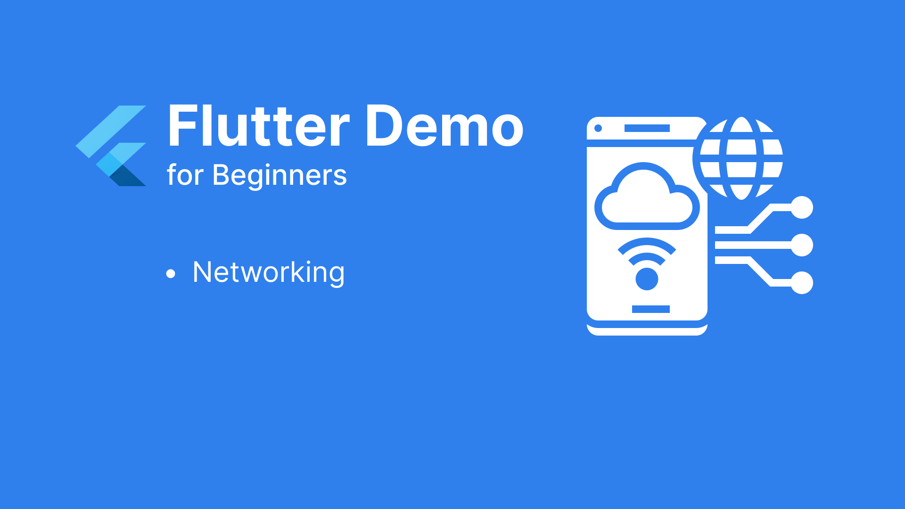

Bài 4. Xử lý networking lấy dữ liệu thật
Chúng ta sẽ xử lý bước tiếp theo là lấy dữ liệu danh sách các câu hỏi từ BE và hiển thị lên tương ứng.
I.Cấu trúc lại thư viện gọi RestApi
1.Tạo demo api trả dữ liệu với server expressjs
Để có dữ liệu từ api, mình tạo nhanh 1 server expressjs và trả về response như sau:

2. Định nghĩa response cơ bản
Dữ liệu sau khi call api sẽ có trường hợp thành công/thất bại. Tương ứng đó ta sẽ tạo model ServiceResponse để định nghĩa.

Trong ServiceResponse chúng ta có thể thấy:
- Status: enum Status { success, error }, chính là thể hiện cho response thành công/ thất bại
- Data: Là dữ liệu sau khi thành công mà chúng ta nhận được
- Exception: là lỗi trả về khi thất bại
3. Wrap lại thư viện gọi rest api
Ở Flutter, để có thể kết nối vào api, chúng ta sử dụng thư viện dio
Việc đầu tiên cần làm khi xử lý với networking là cần phải wrap thư viện dio thành class base xử lý. Không chỉ với việc xử lý với networking, mà còn với nhiều xử lý khác, chúng ta cũng cần làm như vậy, tại sao lại cần phải làm thế? Đó chính là vì một thời điểm nào đó, chúng ta có thể sử dụng 1 thư viện khác để thay thế, việc wrap thư viện gốc chúng ta cần vào utils sẽ tránh được những thay đổi không đáng có về sau, đồng thời có thể xử lý các trường hợp ngoại lệ được tập trung tại đây.
Utils wrap dio sẽ có dạng:

Ở đây mình thực hiện wrap lại method get, và chỉ xử lý cơ bản dio exception và trả về response error. Nếu các bạn có nhu cầu cần xử lý cụ thể các trường hợp exception phù hợp với yc nghiệm vụ thì có thể tham khảo ở phần Flutter nâng cao về dựng base.
II.Quản lý state cơ bản
1.Call api lấy dữ liệu
Xong phần xử lý cơ bản với network, giờ quay về giao diện trang chủ, ta nhận thấy ở trang này có dữ liệu về danh sách các câu hỏi. Nó chính là state, và để quản lý được thì Flutter có nhiều cơ chế. Mình sẽ giới thiệu các bạn sử dụng Bloc Cubit, nhưng trước tiên chúng ta cứ bắt đầu với quản lý state cơ bản của Flutter với StatefullWidget đã nhé.
Tại màn HomeSceen, ta chuyển về dạng StatefullWidget để thực hiện gọi api lấy dữ liệu câu hỏi về và hiển thị lên.


Chạy lại project, print dữ liệu chúng ta sẽ có:

Như vậy, với trường hợp gọi api thành công, chúng ta đã có dữ liệu về danh sách các câu hỏi.
2.Cast dữ liệu nhận được từ api thành object model
Để có thể sử dụng được dữ liệu, chúng ta cần xây object model cho các câu hỏi và thực hiện cast dữ liệu vừa nhận được ở trên về model đó.

Trong model chúng ta định nghĩa các giá trị như: number, result, picture, suggest ứng với dữ liệu được trả ra từ Api. Các bạn cũng sẽ nhìn thấy hàm fromJson đúng không, nó sẽ giúp chúng ta convert dữ liệu từ json về object. Tạo model xong rồi, giờ tới việc cast dữ liệu và chỉnh sửa hàm getListQuestion() nào:

Tiếp theo sẽ chạy debug và kiểm tra từng giá trị ở các bước nhé:

Kiểm tra response.data ta sẽ thấy api đã trả về 9 câu hỏi, và dữ liệu đang là một List các Map, mỗi Map là dữ liệu của 1 câu hỏi

Kiểm tra câu lệnh tiếp theo: ở đây chính là duyệt mảng câu hỏi phía trên, thực hiện gọi QuestionModel.fromJson(json) để cast về QuestionModel. Chúng ta có thể nhìn thấy, lúc này kiểu dữ liệu cho các câu hỏi đã không còn là Map nữa, mà được cast về đúng QuestionModel rồi.
Như vậy đã đảm bảo việc chuyển dữ liệu về đối tượng tương ứng.
3.setState
Để thông báo trạng thái của giao diện thay đổi, chúng ta sử dụng setState
Tiến hành cập lại lại danh sách câu hỏi mới load được từ api cho màn HomeScreen nào:

Sau khi setState lại, hàm build sẽ được gọi và tiến hành vẽ lại giao diện, từ đó danh sách các câu hỏi sẽ được vẽ lên tương ứng.
III. Tổng kết
Qua bài này, chúng ta đã xây dựng được cấu trúc cơ bản của base_network, lấy được dữ liệu từ api và chuyển đổi về dạng object model có thể sử dụng trong app. Đồng thời hiểu được cách quản lý state cơ bản trong Flutter